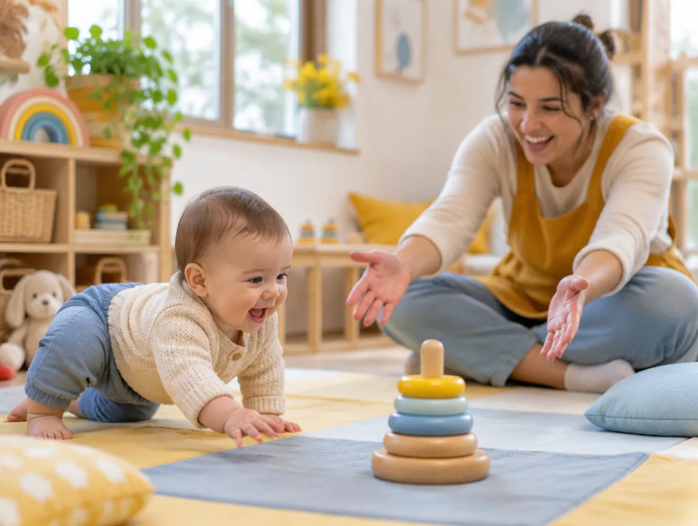

Berçário
Cuidado e educação num ambiente tranquilo, que transmite confiança, afeto e aprendizagens que fazem sentido para os bebês. Cada bebê é acompanhado individualmente por profissionais qualificados, com supervisão direta da coordenação.
- Berçário I · 4 a 11 meses
- Berçário II · 1 ano